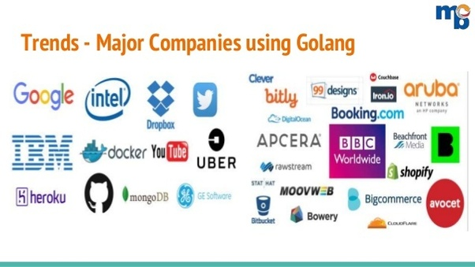

Mô tả:
Xây dựng ứng dụng Web bán hàng bằng Golang yêu cầu sinh viên đã lập trình HTML, CSS, JavaScript căn bản.
Khóa học gồm 15 buổi, mỗi tuần 2 buổi, học tại phòng lab của Techmaster. Sinh viên thực tập web front end tại Techmaster được giảm 20% học phí.
Giảng viên : Nguyễn Thành Long - Nguyễn Hàn Duy - Trịnh Minh Thúy
Nội dung giảng dạy là những bài lab thực hành dự án từ nhỏ, dễ đến phức tap. Sinh viên đăng ký học sẽ được học miễn phí khoá học Docker qua ví dụ thực tế.
Tại sao chọn Golang?
- Golang là ngôn ngữ được phát triển bởi Google,được cộng đồng đón nhận rộng rãi, ứng dụng tốt cho kiến trúc microservice.
- Tốc độ thực thi nhanh gần như C, nhanh hơn Java, C# ở tác vụ giao tiếp http web
- Tốn ít bộ nhớ hơn phù hợp cho triển khai microservice
- Cú pháp đơn giản, dễ hiểu giống với C, nhưng không có con trỏ, class, generic, template... Học nhanh, giải quyết vấn đề khó tuyển nhân sự Golang
- Tốc độ benchmark Golang web framework EchoLab Stack, Iris,... nhanh khoảng gấp 4 lần Node.js Express, và tất nhiên là rất nhiều lần PHP. Tốc độ phản hồi không phải là tất cả khi chọn 1 web framework, tuy nhiên với công ty start up làm ứng dụng có lưu lượng truy cập lớn. Golang là một lựa chọn tốt
- Được ứng dụng nhiều để triển khai ứng dụng tiền kỹ thuật số, do khả năng cài đặt trên nhiều node với tiêu thụ năng lượng, tài nguyên thấp

Những công ti đã sử dụng Golang:
